시계는 돌고돌아 다시 한 번 생일을 맞게 되었구나.
생일 축하한다.
이번에도 어김없이 기부를 해야겠지?^^
올해에는 장학금을 받아 기부금이 제법 많이 늘어났어.
하지만 아직 2학기 장학금을 받지 못해 1학기 장학금에서 나온 기부금으로만 해야겠구나.
이번에는 네이버 해피빈을 이용하지 않기로 했지?
네이버에 대한 신뢰도가 떨어진 것도 있고,
해피빈에 등록된 단체 역시 신뢰할 수 있을지 모르기 때문이었지?
그래서 제법 신뢰도가 높고 큰 단체 중에 두 가지를 선택했어.
월드비전 - http://www.worldvision.or.kr
유니세프 - http://www.unicef.or.kr
TV에도 여러 번 소개되고 많은 분들이 기부를 하고 있으니 괜찮겠지?^^;;
기부금의 반을 나눠 두 곳에 전달할까 생각을 해보았는데,
월드비전은 전에 한 적이 있어 잘 내키지 않더라구.
그리고 유니세프는 내가 원하는 세상 그리고 철학과도 많은 면이 맞아떨어지는 듯 싶어.
그래서 이번에는 유니세프에 기부하기로 했지.
[caption id="" align="aligncenter" width="485" caption=" "]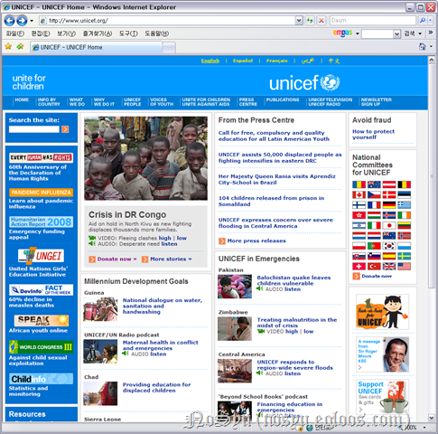[/caption]
먼저 유니세프 홈페이지가 맞는지 확인해보고자 공식 사이트를 찾아갔어.
그리고 여기서 Donate Now를 클릭했어.
[caption id="" align="aligncenter" width="424" caption=" "]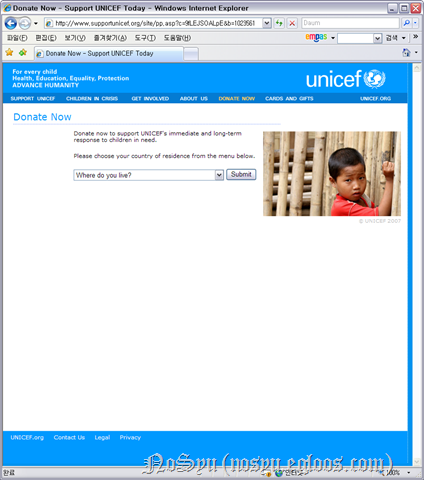[/caption]
어디에 사느냐 물어보더군.(Where do you live?)
그래서 대한민국(Korea, Republic of)을 선택했어.
[caption id="" align="aligncenter" width="485" caption=" "]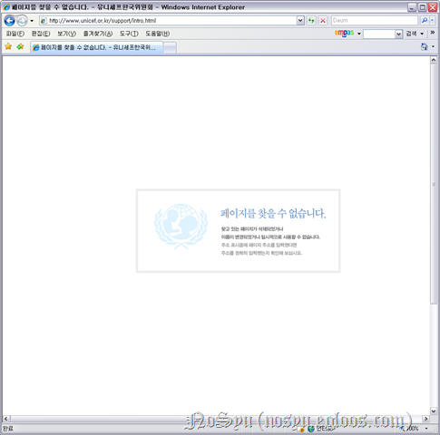[/caption]
그러자 페이지를 찾을 수 없다고 나오더군.
이런 난감한 일이...
그래도 위의 그림을 클릭하니 홈페이지 메인 화면이 나왔어.
[caption id="" align="aligncenter" width="485" caption=" "]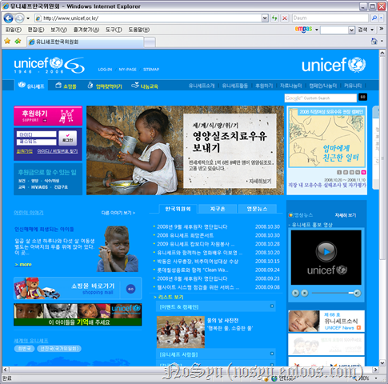[/caption]
즉, http://www.unicef.or.kr이 맞는 주소였어.
그래서 회원가입을 한 후 후원하기 버튼을 클릭했어.
[caption id="" align="aligncenter" width="485" caption=" "]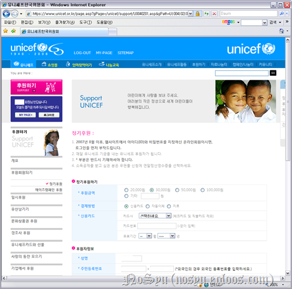[/caption]
들어가니 처음으로 정기후원 페이지가 나오더라구.
하지만 나는 현재 소득이 일정하게 있는 것도 아니고,
개인적으로 후원(기부)에 대해 계획을 가지고 있어 정기후원은 하지 않기로 했어.
[caption id="" align="aligncenter" width="485" caption=" "]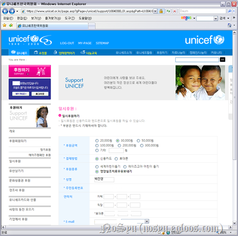[/caption]
이번에는 일시후원을 하는 것이니까 이것을 클릭했지.
기본으로 30,000원을 지정하는군..^^;;
거기에 영양실조치료우유보내기에 후원한다고 적혀있더라구.
[caption id="" align="aligncenter" width="601" caption=" "]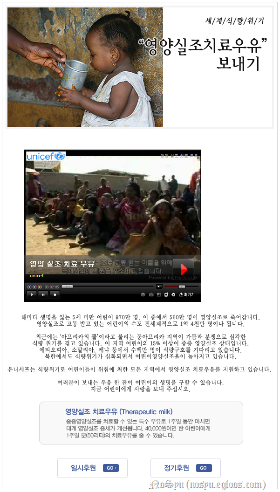[/caption]
아프리카에 있는 영양실조에 걸려 고생이 심하다고 하는군.
거기에 우유를 보내주는 캠페인이라...
너는 모든 사람들이 굶주림을 없애기를 원하지.
그리고 어린아이가 굶주리는 것을 더더욱 싫어하지.
그러하니 너에게 딱 맞는 것이라 생각해.
[caption id="" align="aligncenter" width="390" caption=" "]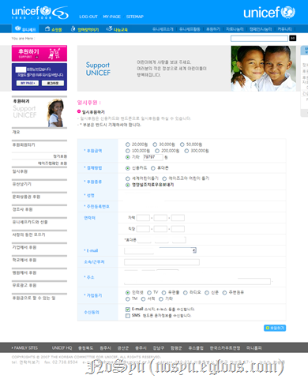[/caption]
적절하다!
그러니 기부하도록하자.
지금까지 기부금으로 917.476원을 모았어.
그리고 지금까지 기부를 119,500원을 하여 남은 금액이 797,976원.
그것의 10%이니 79,797원을 기부하는거야.
숫자 하나 재미있군.
[caption id="" align="aligncenter" width="230" caption=" "]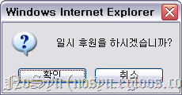[/caption]
일시 후원할 것이냐고 물어보는군.
그래서 확인을 클릭했지.
[caption id="" align="aligncenter" width="398" caption=" "]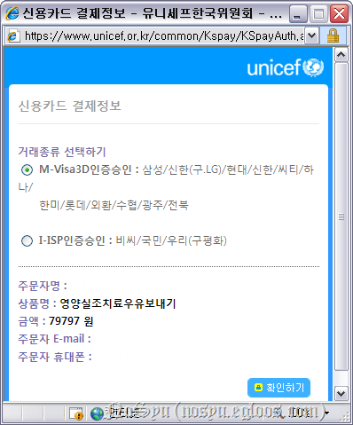[/caption]
신용카드로 기부를 할 것이라 이런 창이 뜨더군요.
79797원.. 아름답군.
[caption id="" align="aligncenter" width="230" caption=" "]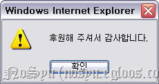[/caption]
그렇게 기부를 끝내고나니 위와 같은 창이 뜨더군.
[caption id="" align="aligncenter" width="398" caption=" "]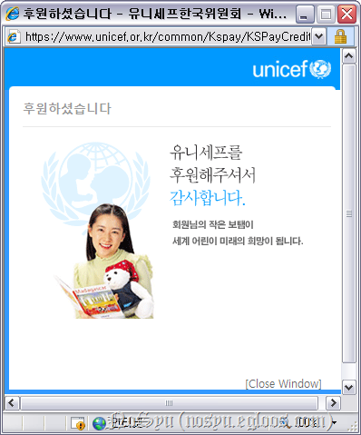[/caption]
그리고 하나 더 나오더군.
[caption id="" align="aligncenter" width="577" caption=" "]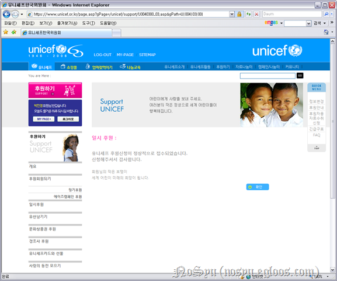[/caption]
마지막으로 다시 한 번 후원이 완료되었다는 문구가 나왔어.
개인적으로 MB와 MS 덕분에 내가 기부하는 돈이 큰 효과를 발휘하지 못할 것 같아 아쉬워.
작년에 같은 돈을 기부하였더라면 최소 한 명 이상의 아이가 우유를 마셨을텐데...
하지만 이건 어쩔 수 없는 현실...
다만, 아이들에게 우유가 잘 전달되어 삶에 희망을 가지기를 바랄 뿐....
작년에는 다음 애드클릭스로 벌은 돈이 300원을 넘지 못해 추가하지 못했지만,
이번에는 4000원 정도의 돈이 모아져서 100% 기부에 사용할 수 있었어.
내년에는 아마 구글 애드센스로 번 돈도 이용할 수 있지 않을까 싶어.
거기에 이번에는 장학금을 추가하여 전보다 많은 돈을 기부할 수 있었어.
만약 네가 돈을 벌게 되더라도 이 마음 변하지 말자.
마지막으로 생일 다시 한 번 축하한다.
생일은 언제나 좋은 듯싶지만 왜인지 모르게 씁쓸함이 느껴지는 듯 싶구나.
왜 그런지는 잘 모르겠다구?
어쩌면......
그럴지도 모르겠다.^^
여하튼 생일은 생일.
너에게 있어 생일은 기부를 하는 날이 되어버린 듯싶어도
여하튼 네가 태어난 날.
네가 여기 이 우주에 존재하고 있다는 것을 세상에 처음 알린 날이야.
그러니 세상에 사라지기 전까지 축하해야하는 것은 당연...
씁쓸함을 넘어 나아가자구~^^
대학 졸업까지... 848일....
NoSyu가 태어난지 8402일 되는 날에...